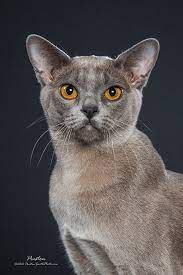

|  |
| European Burmese |
BEHAVIOR
The Burmese cat is an extremely friendly and affectionate creature that needs attention from human beings to be happy. The Burmese cat breed is very demanding and Burmese cats will follow owners around the house crying for attention – they might even climb their owner's leg begging to be picked up and cuddled! As very vocal cats they will often greet owners when they return home or demand what they want and to join in with all activities. Loyal to their owners, they are sometimes known as the 'dog cat' as many are happy to play retrieve. They are very intelligent and can work out problems such as opening doors are often successful escape artists!
GROOMING
Burmese coats are short, fine, and have a glossy, silky shine. They require minimal grooming and do not really shed much. Grooming your cat with a rubber brush once a week should be enough to rid the coat of dead hairs and keep it looking lustrous.
HEALTH PROBLEMS
Burmese are generally healthy, but they can develop an inherited disease called hypokalemia, which causes skeletal muscle weakness. There is a simple DNA test to look familial episodic hypokalemic polymyopathy (the full name of the disorder). It is episodic in nature and can affect the whole animal or may be localized to the neck or limb muscles. As a result, affected cats tend to have problems walking and holding their head correctly.
NUTRITION
To keep up with their active lifestyle, these cats need plenty of protein and nutrients. It is always best to discuss diet options with your vet to ensure all of your cat's needs are being met. High-quality dry food is helpful in maintaining good oral health and can be supplemented with wet food if you prefer. To prevent your cat from becoming a picky eater, the National Alliance of Burmese Breeders suggests that it is important to switch brands of cat food every now and then so your feline friend does not become accustomed to just one kind.